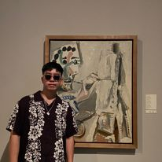

Zipeng Jiang
Om mig
Mitt namn är Zipeng och jag är 23 år gammal. Jag är en front-end student på Grit Academy. Men jag är också deltid anställd i ett läkemedelsföretag som heter Apoex. Där vi leverera ut olika läkemedel till olika sjukhus inom skåne, privat institution och till privat personer.
Min fritid
Jag gilla att träna med mina vänner under fritiden. Det kan vara styrketräning men också andra sporter som till exempel basketboll eller fotboll. Utöver det så gillar jag att resa. Jag reste ganska mycket under denna sommaren så jag fick ett smeknamn av mina kompisar. Vilket är Mr.Worldwide.
Mitt favorit citat är : To be or not to be, that is the question - William Shakespeare